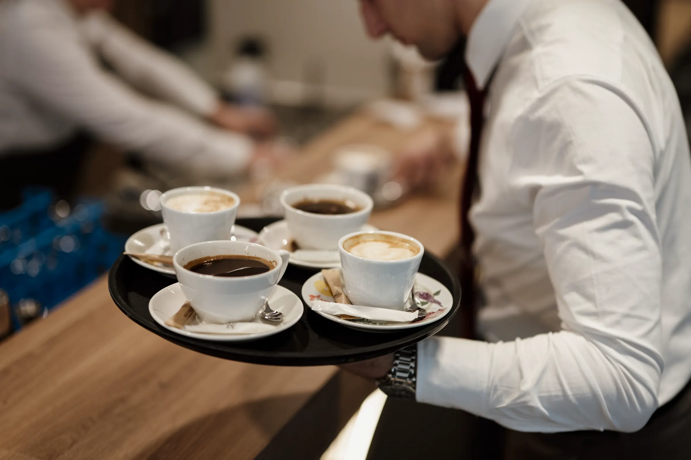
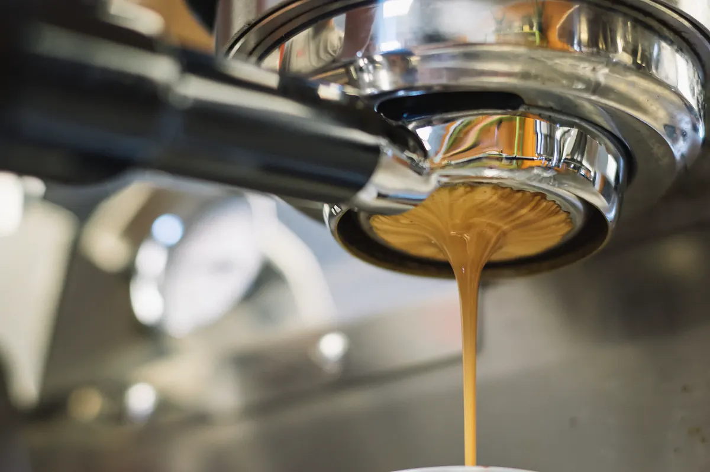
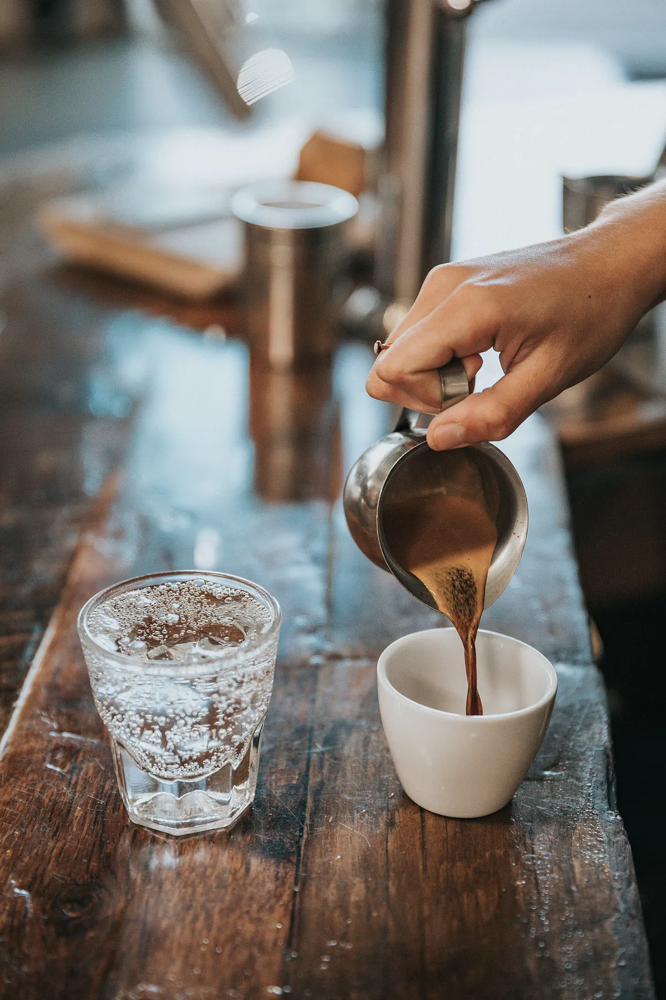
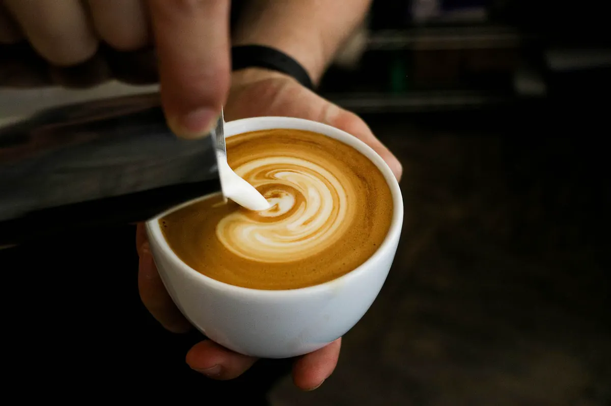
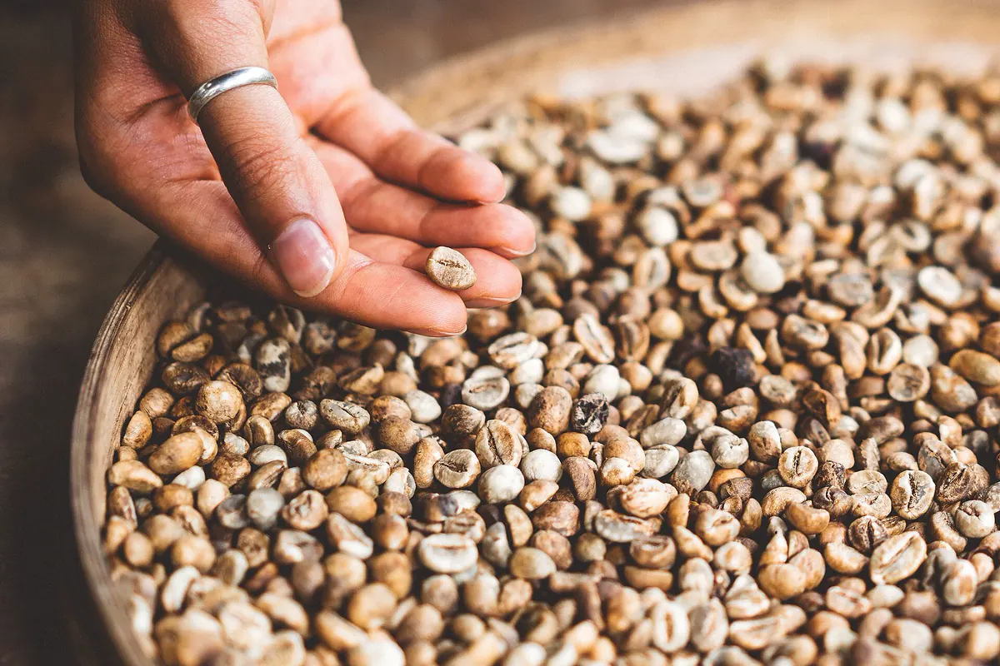
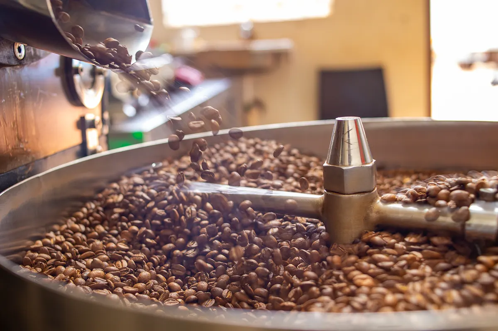

Café mit Rösterei in Leipzig-Plagwitz
Espresso und Filterkaffee aus eigener Röstung, Dienstag bis Sonntag ab 8 Uhr.
So findest du uns in Plagwitz
Öffnungszeiten
- Di bis Fr
- 8 bis 18 Uhr
- Sa, So
- 9 bis 17 Uhr
- Montag
- geschlossen
- Bohnenauf Wunsch frisch gemahlen

Espresso, Filter und Bohnen
Bohnen aus der eigenen Röstung, jede Woche frisch. Röstung ansehen
Espresso-Bar
- EspressoDoppelt, 36 g2,40 €
- CortadoWenig warme Milch3,10 €
- CappuccinoAuch mit Hafermilch3,60 €
- Flat White160 ml3,90 €
Filter und Bohnen
- FilterkaffeeRöstung der Woche3,20 €
- Filter, große Tasse350 ml4,10 €
- Bohnen, 250 gAuf Wunsch gemahlen9,80 €
- Bohnen, 1 kgFür Büros34,50 €


Von der Rohbohne zur Röstung
Wir rösten jeden Dienstag im Hinterhaus. Ab Mittwoch gibt es die Bohnen an der Bar.
-

Rohkaffee von Hand verlesen
Vor dem Rösten sortieren wir Steine und kaputte Bohnen aus, damit keine Tasse nach einer Fehlbohne schmeckt.
-

In kleinen Chargen rösten
Jede Charge kommt nach dem Rösten ins Kühlsieb, damit die Bohnen nicht nachrösten.
-

Ab Mittwoch in der Tasse
Nach einem Tag Ruhe brühen wir die neue Röstung an der Bar und füllen sie in Tüten zu 250 g und 1 kg.